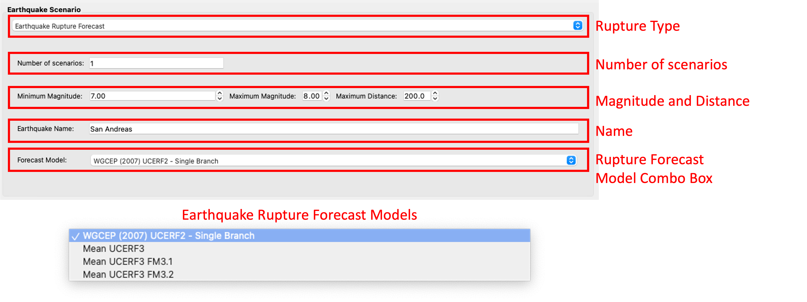
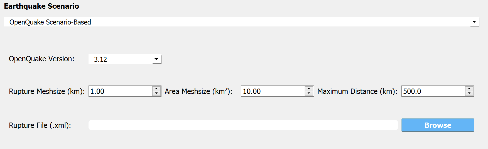
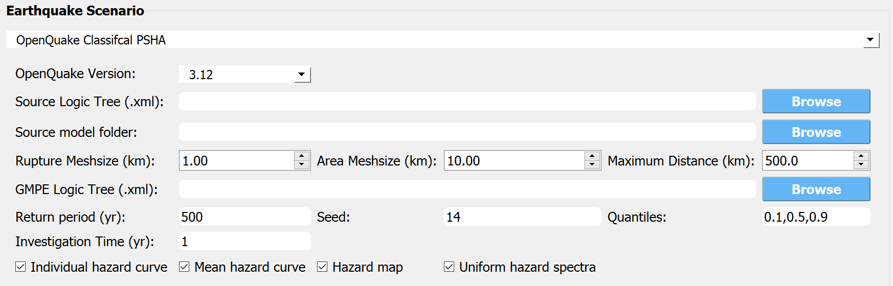
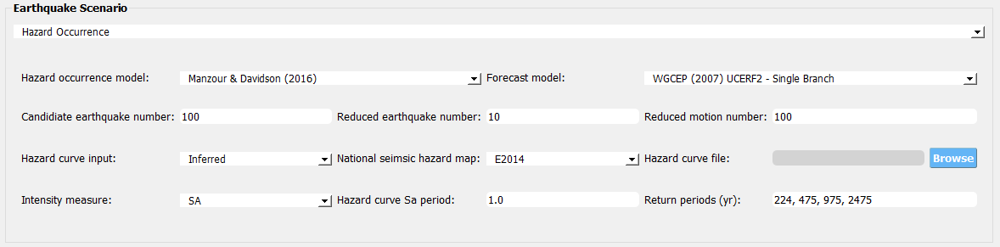

3. Tools¶
The main menu toolbar contains the tools dropdown menu. Tools in R2D are applications that are provided to create inputs for certain workflow applications, e.g. the Earthquake Scenario Simulation tool will provide inputs for the User Defined Ground motion and the Regional Site Response HAZ widegets.
3.1. Earthquake Scenario Simulation¶
This tool dialog is where user can enter data on an earthquake scenario and the tool will generate a series of ground motions for a series of points in the area. The application employs OpenSHA, determining which records to select from a ground motion database. The Earthquake Scenario Simulation input panel is given in Fig. 3.1.1 and the individual input panes are discussed below.
Fig. 3.1.1 Earthquake Scenario Simulation Input panel.¶
Site Definition Parameters
This is where a user defines the geographical locations where ground motion selection will occur. A user can select to input a single location, multiple locations on a grid, or a collection of scattered sites as seen in the Grid Type Selection box in the top-left corner of Fig. 3.1.2.
Single Location
In the Single Location pane, shown in Fig. 3.1.2, the user needs to provide the following inputs:
Location: The latitude and longitude of the site.
Number of Ground Motions per Site: The number of ground motions that will be selected at the site.

Fig. 3.1.2 Single location site definition.¶
Grid of Locations
In the Grid of Locations input pane, given in Fig. 3.1.3, the user can either manually define a grid, or select a grid on a map. To manually define a grid, the user needs to provide the following input parameters:
Latitude Extents: The minimum and maximum latitude values that the grid will span.
Longitude Extents: The minimum and maximum longitude values that the grid will span.
In addition to defining the geographical extents of the grid, the user must also provide the following inputs:
Number of Ground Motions per Site: The number of ground motions that will be selected at each grid point.
Latitude Discretization: The number of divisions along the latitude direction.
Longitude Discretization: The number of divisions along the longitude direction.

Fig. 3.1.3 Grid of locations site definition pane.¶
To select a grid on a map, the user needs to click on the Define Grid on Map button and a new Grid Selection Window will appear with the grid, as seen in Fig. 3.1.4. A user can click and drag the Resize and Move handles, shown in Fig. 3.1.4 as blue circles, to resize the grid extents and to move the grid. Changing the grid discretization along the latitude and longitude directions will change the number of grid divisions on the map. Once a grid is defined on the map, the window can be closed and the grid information will be updated in the input pane. To view or modify the grid again, press the Define Grid on Map button and the Grid Selection Window displaying the grid will reappear.

Fig. 3.1.4 Selection of grid on map.¶
Scattered Locations
In the Scattered Locations input pane, given in Fig. 3.1.5, the user provides a custom list of sites. The following inputs are required:
Site File: The user provided file, in
.csvformat, containing the list of sites and corresponding site data. At a minimum the site file must contain the station number, latitude, and longitude of each site, as seen in the Site Preview Table in Fig. 3.1.5.Site Preview Table: Table providing the information at each site. Apart from the station number, latitude, and longitude at each site, the site file can include other information such as the Vs30 at the site.
Minimum and Maximum Site ID: The minimum and maximum site IDs considered.
Number of Ground Motions per Site: The number of ground motions that will be selected at each site.

Fig. 3.1.5 Scattered sites input pane.¶
Spatial Correlation and Ground Motion Scaling Factors
This is where the user selects the spatial correlation models, and where the user defines the minimum and maximum scaling factors that are used in ground motion selection. Shown at the top of Fig. 3.1.6, the user has the option to select the Intra- and Inter-event Spatial Correlation Models. Spatial correlation ensures that ground motions at different locations will share similar characteristics. The following Inter-event Spatial Correlation Models are available:
Baker & Jayaram (2008)
and the following Intra-event Spatial Correlation Models are available:
Markhvida et al. (2017)
Jayaram & Baker (2009)
Loth & Baker (2013)
Special thanks to Dr. Anne Husley for sharing the python package seaturtles, especially for the method of computing the regional ground motion intensity using the Markhvida et al. (2017) and Baker & Jayaram (2008) correlation models.
The Ground Motion Record Scaling Bounds, shown at the bottom of Fig. 3.1.6, are the minimum and maximum scaling factors that intensity measures can be scaled by during the ground motion selection process.

Fig. 3.1.6 Spatial correlation and ground motion selection scaling factors.¶
Ground Motion Record Database
Ground motion records are selected from a ground motion database. Currently, only the PEER NGA-West2 database is available, shown in the Ground Motion Record Database combo box in Fig. 3.1.7. Alternatively, a user can select None to skip ground motion selection altogether. In that case, only the intensity measures will be saved at each location.

Fig. 3.1.7 Ground motion records database.¶
Ground Motion Prediction Equations
Ground motion prediction equations estimate the intensity of ground shaking that may occur at a site. The Ground Motion Prediction Equation combo box, shown in Fig. 3.1.8, contains the following ground motion prediction equations:
Abrahamson, Silva & Kamai (2014)
Boore, Stewart, Seyhan & Atkinson (2014)
Campbell & Bozorgnia (2014)
Chiou & Youngs (2014)

Fig. 3.1.8 Ground motion prediction equations.¶
Earthquake Source
This is where the user defines the earthquake rupture characteristics. In the Rupture Type combo box, shown in Fig. 3.1.9, point source and UCERF earthquake rupture forecast models are available.
Point Source
The Point Source pane, shown in Fig. 3.1.9, requires the following inputs:
Magnitude: Magnitude of the earthquake.
Location and Depth: Location and depth of earthquake rupture.
Rupture Geometry: Average dip and rake of rupture.

Fig. 3.1.9 Point source earthquake rupture.¶
UCERF Earthquake Rupture Forecast
The UCERF Earthquake Rupture Forecast pane, shown in Fig. 3.1.10, requires the following inputs:
Number of scenarios: The number of rupture scenarios considered.
Magnitude and Distance: Magnitude of the earthquake and the maximum distance, in km, from a site.
Name: Users can specify keywords here to search for specific earthquakes.
Earthquake Forecast Model: Type of earthquake forecast model.
The types of UCERF earthquake forecast models available are:
WGCEP (2007) UCERF2 - Single Branch
Mean UCERF3
Mean UCERF3 FM3.1
Mean UCERF3 FM3.2
Fig. 3.1.10 Earthquake rupture forecast.¶
OpenQuake Scenario-Based
The OpenQuake Scenario-Based pane, shown in Fig. 3.1.11, requires the following inputs:
OpenQuake Version: Version of OpenQuake (currently available 3.10, 3.11, 3.12, and latest minor version is supported).
Rupture File: A xml file (NRML format) defining an earthquake source.
Rupture Meshsize: Mesh size for line sources.
Area Meshsize: Mesh size for area sources.
Maximum Distance: Maximum considered distance from source to site.
Fig. 3.1.11 OpenQuake Scenario-Based Input.¶
OpenQuake Classcial PSHA
The OpenQuake Classcial PSHA pane, shown in Fig. 3.1.12, requires the following inputs:
OpenQuake Version: Version of OpenQuake (currently available 3.10, 3.11, 3.12, and latest minor version is supported).
Source Logic Tree: A xml file (NRML format) defining a logic tree model for seismic sources.
Source Model Folder: A directory hosting the seismic sources defined in the source logic tree.
Rupture Meshsize: Mesh size for line sources.
Area Meshsize: Mesh size for area sources.
Maximum Distance: Maximum considered distance from source to site.
GMPE Logic Tree: A xml file (NRML format) defining a logic tree model for ground motion prediction equations.
Return Period: Return period of the PSHA.
Seed: Seed in generating ground motion maps.
Quantiles: Quantile levels of ground motion intensity measures in the output (e.g., uniform hazard spectra).
Investigation Time: time period for computing the probability of exceedance
Output: Checkboxes for Individual hazard curve, Mean hazard curve, Hazard map, and Uniform hazard spectra
Fig. 3.1.12 OpenQuake Classical PSHA Input.¶
Hazard Occurrence
The Hazard Occurrence pane, shown in Fig. 3.1.13, requires the following inputs:
Hazard occurrence model: Currently Manzour and Davidson (2016) ([Manzour2016]) is available.
- Forecast model: Type of earthquake forecast model where the candidate earthquake scenarios are collected from.
WGCEP (2007) UCERF2 - Single Branch
Mean UCERF3
Mean UCERF3 FM3.1
Mean UCERF3 FM3.2
Candidate earthquake number: Number of earthquakes used as candidates to select from.
Reduced earthquake number: Maximum number of selected (reduced) earthquakes to recover the hazard curves.
Reduced motion number: Maximum number of selected (reduced) ground motions per individual site to recover the site hazard curve.
Hazard curve input: Types of reference hazard curves: (1) Inferred and (2) User-defined. Inferred hazard curves are fetched from National seismic hazar map project ([Peterson2020]). User-defined hazard curves should be summarized in a csv file following the
template.National seismic hazard map: Version of national seismic hazard map used to infer reference site-specific hazard curves.
Hazard curve file: User-defined hazard curve file.
Intensity measure: The intensity measure type used in reference hazard curves.
Hazard curve Sa period: Period of the response acceleration Sa if the intensity measure type is Sa.
Return periods (yr): A list of return periods in year used in minimizing the difference between recovered and reference hazard curves (seperated by “,”).
Fig. 3.1.13 Hazard Occurrence Input.¶
Intensity Measure and Period Points
The Intensity Measure and Period Points pane, shown in Fig. 3.1.14, requires the following inputs:
Intensity Measure Type: Type of intensity measure. The Spectral Acceleration (SA) and Peak Ground Acceleration (PGA) intensity measures are available.
Period Points: List of periods, in seconds, that are used in the ground motion selection procedure.

Fig. 3.1.14 Intensity measure and period.¶
Output Directory and Run Button
Shown at the bottom of Fig. 3.1.15, the Run Hazard Simulation button starts the ground motion selection application. The Output Directory box, provided in Fig. 3.1.15, allows the user to select a directory that will contain the input and output files of the earthquake scenario simulation.
Fig. 3.1.15 Earthquake Scenario Simulation Output Directory.¶
- The earthquake scenario simulation is run via a Python script. When the Run Hazard Simulation button is pressed, text output from the script will appear in the Program Output console at the bottom of the application.
Upon successful completion of the earthquake scenario simulation, results from the simulation are in the Output Directory folder that is specified above, as shown in Fig. 3.1.15. The final output is a
.csvfile calledEventGrid.csv. TheEventGrid.csvfile contains the grid points and their locations and file names. Each grid point is assigned a.csvfile containing a list of the ground motions at the grid point and their scaling factors. If applicable, the corresponding ground motion records, inJSONformat, are also in the Output Directory directoy. Next, theEventGrid.csvis post-processed, and a new layer containing the ground motions is added to the GIS widget. Shown on the right-hand side of Fig. 3.1.16, the grid points are represented with a cross symbol. Clicking on a grid point will produce a popup with information about the ground motions at that point.
Fig. 3.1.16 Post-processing output and grid visualization.¶
3.2. OpenQuake Selection Widget¶
The OpenQuake Selection Widget allows for the selection of OpenQuake seismic sources in a GIS window and exporting only the selected sources into a new .xml file for use in OpenQuake. The OpenQuake Selection Widget input pane is given in Fig. 3.2.1.
To load an OpenQuake file (only .xml files supported), click on the Browse button next to the input file box, and then select the input file in the dialog that will appear.
Next, select a subset of sources in the GIS window that you wish to keep. To be able to select the OpenQuake sources in the map, you first need to select a layer in the layer tree, shown on the left-hand side of Fig. 3.2.1. There are three layers that correspond to the different source geometries in OpenQuake; namely point, line, and area sources.
There are several methods available to select the sources on the GIS map. Clicking on one of the Selection Method buttons, shown in Fig. 3.2.1, will change the selection tool to that corresponding method.
Note
Only features that are in the current layer can be selected on the map. The current layer is the layer that is selected (highlighted) in the layer tree.
Some tips for selecting features are:
To select multiple features, hold down the shift key.
The selected features are highlighted in yellow.
A layer needs to be visible to enable asset selection on that layer.
To clear everything and start over again, click on the Clear button.
To clear the selected features on the current layer, click anywhere on the map where there are no features. Alternatively, you can clear all the selected features from all layers by clicking on the Clear Selection button.
Once you are done with the selection process, you can export the selected sources (highlighted in yellow) by first providing a file path and name. Clicking on the Browse button next to the export file box will open a dialog where you can input a directory path and file name, i.e., the name and location where the .xml file containing the selected sources will be saved. Once you have entered a file name and path, clicking on the Export button will generate the new .xml file that can be used in OpenQuake. The name and path of the exported file will appear in the program output pane.

Fig. 3.2.1 OpenQuake selection pane.¶
3.3. Hurricane Scenario¶
This tool dialog is where user can enter data for a specific Hurricane and it will generate a wind field for a specific region..
The Hurricane Scenario Simulation, seen in Fig. 3.3.1, is an tool that calculates a wind field over a user defined grid. The application is implemented based on the method proposed by [SnaikiWu2017a] and [SnaikiWu2017b]. The GIS visualization window, seen at the bottom of Fig. 3.3.1, is used to interactively define hurricane inputs. At a minimum, a user needs to specify a set of hurricane track points, landfall location and parameters, and a wind field grid. The individual input panes are discussed below.

Fig. 3.3.1 Hurricane Scenario Simulation Application.¶
Hurricane Definition
A user has the option to specify a hurricane track and associated landfall parameters, or select a historical hurricane from a built-in database.
Specify Hurricane Track
To manually input a hurricane track, the user needs to supply a
.csvfile with rows that contain the latitude and longitude coordinates of the points along the track. To input the hurricane track file, the user needs to specify the file path in the Path to Hurricane Track File input shown in Fig. 3.3.2. A successfully loaded track is shown at the top of Fig. 3.3.2. The circles represent a measurement point along the track and the arrow head shows the direction of the hurricane. Clicking on a circle will produce a dialog with the available information at that point.
Fig. 3.3.2 Manually defined hurricane track.¶
An example hurricane track input file is given below in Fig. 3.3.3. The track data should be in temporal order, i.e., the first measurement should be in the first row of the input file.

Fig. 3.3.3 Example data for hurricane track input.¶
Users also have the option to specify a terrain roughness file in the
.geojsonformat. Users need to provide the path to the terrain roughness file in the Path to Terrain Roughness File input, given in Fig. 3.3.2. When loaded, the terrain roughness file will be visualized in the GIS window, as highlighted at the bottom of Fig. 3.3.2. If a terrain roughness is not specified, a default value of 0.03 m is used (assuming open/flat terrain few isolated obstacles).Select Hurricane from Database
The panel to select a historical hurricane is shown in Fig. 3.3.4. Clicking on the Load Hurricane Database button will load the database and all of the hurricanes in the database will appear in the GIS window, as shown at the bottom of Fig. 3.3.4. The database that is pre-bundled with the application is the International Best Track Archive for Climate Stewardship (IBTrACS) v04r00 database, listing storms that have occurred in the last three years. Users can modify the
.csvdatabase file, e.g., update it or add their own storm information, if the same header format and file name (ibtracs.last3years.list.v04r00.csv) is retained. Users can find this file in theDatabasesfolder that is in the R2D installation directory.
Fig. 3.3.4 Hurricane selection from database.¶
To load a specific hurricane, a user needs to navigate to a hurricane of their choice in the GIS window and click on the hurricane to select it. The selected hurricane will be highlighted, as shown in Fig. 3.3.5, and a dialog will appear providing the hurricane track metadata. Clicking on the Select Hurricane Button in Fig. 3.3.5 will finalize the selection. The selected hurricane’s metadata will appear in the box that is given in the middle of Fig. 3.3.4.

Fig. 3.3.5 Selecting a hurricane from the map.¶
After selecting a hurricane, a user will see the final hurricane track, similar to what is shown in Fig. 3.3.6. The circles represent a measurement point along the track. Clicking on a circle will produce a dialog with the available information at that point. The blue diamond represents the first point of hurricane landfall, i.e., the first point at which the distance to land is equal to zero. If a landfall location is found, the landfall parameters are programmatically filled in with the measurements at the landfall location. In the case where a hurricane makes landfall more than once, the user has the option to clear the initial landfall point, and select another landfall point, the procedure of which is described below. Note that if a new landfall location is selected by the user, except for the latitude and longitude which is updated programmatically, users should manually update the landfall parameters to agree with the expected parameter values at new location.

Fig. 3.3.6 Output after hurricane selection.¶
Hurricane Landfall Parameters
This is where the user inputs the hurricane landfall parameters. Hurricane landfall occurs when the center of the storm moves across a coastline after traversing open water. Shown in Fig. 3.3.7, the user must supply the following parameter values:
Latitude in degrees North
Longitude in degrees East
Landing, or approach angle, in degrees
Speed in knots (kts)
Pressure in millibars (mb)
Radius in nautical miles (nmile)
Exposure category to classify terrain roughness
Gust duration in seconds (s)
Reference height in meters (m).
Note that if a track is selected from the database, the landfall parameters will be automatically filled in based on the first encountered landfall. The Perturbation input boxes allow the user to specify uncertainty in the parameter values.

Fig. 3.3.7 Hurricane Landfall Parameters.¶
Specify Landfall Location
The hurricane landfall location is manually defined using the buttons in Fig. 3.3.8. Clicking on the Define Landfall on Map button causes a blue circle to appear in the GIS window, as seen in the righthand side of the window in Fig. 3.3.7. A user can click on and drag this circle to any location on the map. When the user is satisfied with their new landfall location, they need to click on the Select Landfall button to finalize the selection. The landfall will then appear as a blue diamond symbol in its own layer in the GIS window. If a user wants to erase an existing landfall location, they need to click on the Clear Landfall button and start over.

Fig. 3.3.8 Specify Hurricane Landfall.¶
Truncate Hurricane Track
R2D allows users to truncate hurricane tracks to save time in the wind field computations. This is also useful when a user requires only a portion of a hurricane track in their region of interest. The buttons for truncating a hurricane track are shown in Fig. 3.3.9. Clicking on the Select Area on Map button in the figure will turn on the selection procedure. Clicking on any point in the GIS window will start the selection process. Continuing the point selection procedure by clicking elsewhere on the map will form the boundary of the selection polygon, an example of which is provided in Fig. 3.3.9. Right-clicking anywhere on the map, or my pressing the escape key, will clear the polygon and select the points within the polygon. The selected points will be highlighted in yellow.The selection points can be cleared at any time by pressing the Clear button. Clicking on the Apply button will finalize the selection. The yellow-highlighted track points that are selected will be kept and all other points will be discarded. Note that once the Apply button is pressed, the procedure cannot be undone. An example truncated track is given in the left-hand side of the GIS window in Fig. 3.3.9.

Fig. 3.3.9 Truncate Hurricane Track.¶
Specify Wind Field Grid
To select the wind field grid on a map, the user needs to click on the Define Grid on Map button. A new grid will appear in the GIS window, as seen in Fig. 3.3.10. A user can click and drag the Resize and Move handles, shown in Fig. 3.3.10, to resize the grid extents and to move the grid. Changing the grid discretization along the latitude and longitude directions will change the number of grid divisions on the map. Once a grid is defined on the map, the user needs to click on the Select Grid button to finalize grid selection. When grid selection is finalized, a new layer is added to the GIS widget. Shown on the right-hand side of Fig. 3.3.10, the wind field grid points are represented with a cross symbol. Clicking on the Clear Grid button will clear the existing grid, allowing for the selection of a new grid.

Fig. 3.3.10 Hurricane Wind Field Grid.¶
Run Simulation Button
Shown on the right-hand side of Fig. 3.3.1, the Run Simulation button starts the hurricane simulation application. The results from the simulation are in the Output Directory folder specified in R2D preferences. The final output is a .csv file called EventGrid.csv. The EventGrid.csv file contains the grid point locations and file names. Each grid point is assigned a .csv file containing a list of the peak wind speeds at the grid point. The EventGrid.csv is post-processed and the grid points created in the Specify Wind Field Grid step will be updated with the Peak Wind Speed values that are calculated in the simulation. Clicking on a grid point will produce a popup listing the wind speeds at that point.
3.4. User-specified Hurricane¶
The User-specified Hurricane application loads the results of a Hurricane Scenario Simulation that was shown previously. The User-specified Hurricanes application input pane is given in fig-R2DUserSelectWindField. As seen in the figure, the user is required to input the file path to the EventGrid.csv file. If the wind and/or inundation field stations are not in the same folder as the EventGrid.csv file, then the user needs to input the directory path to the folder containing the wind and/or inundation field station files. The user also needs to specify the units of the intensity measure field.

3.5. Census Data Allocation¶
The Census Data Allocation application can be employed to augment an existing asset inventory with US Census demographic information and socio-economic information, e.g., household income, from the American Community Survey (ACS). The input panel is shown in Fig. 3.5.1. As seen in the figure, the asset information is supplied via selection of an already imported layer in R2D. Alternatively, a user can supply an asset layer in a GIS format, e.g., shapefile, geodatabase, and the supplied layer will be employed.
Note
R2D will make a copy of the asset layer that you provide. Going forward, the copy of the asset layer is employed to preserve the original data.
- The procedure is as follows:
Given an asset inventory, R2D cross-references the assets with a US counties map (2021), generating a set of US county codes that overlap with the provided asset inventory.
The US Census API is queried and the population demographic information within each county is downloaded at the block level and saved locally . Similarly, the ACS API is called to download socio-economic information and the data is saved as a second GIS file. The ACS data is saved at the block group level. The GIS files are found in the output folder specified by the user (shown below as Directory to store created .GIS files).
The Census and ACS information from the downloaded GIS files is extracted and appended to the assets in the copied layer by performing a spatial join. This means that each asset within the copied layer will be augmented to contain the informtaion extracted from the Census block level layer and the ACS block group layer of which it is located in.
Note
The download of census data employs a modified version of the censusutil.py script from the pyincore-data module, a component of IN-CORE.
The Asset Layer Selection Dropdown is where the user selects the GIS layer in R2D that contains the asset inventory of interest. When the user selects a layer, it will be copied automatically.
If the user provides their own GIS file with the asset inventory, they will also have to provide the Coordinate Reference System (CRS). The CRS dropdown is where the coordinate reference system for a particular GIS file is specified so that it can be projected into the correct coordinates.
The Census Date dropdown is where the Census vintage is provided. Currently, the 2010 and 2020 Census dates are supported.
The Census Variables input box is where the user can provide custom variables to download from the Census API in a comma separated list. For the 2010 vintage the default variables are
P005001,P005003,P005004,P005010, and for the 2020 vintage, the default variables areP2_001N,P2_002N,P2_005N,P2_006N. You can go to the Census website for a particular vintage to see what the variables mean, and what other variables are available.- The default variables for 2010 are:
P005001 = Total
P005003 = Total!!Not Hispanic or Latino!!White alone
P005004 = Total!!Not Hispanic or Latino!!Black or African American alone
P005010 = Total!!Hispanic or Latino
- The default variables for 2020 are:
P2_001N=!!Total:
P2_002N=!!Total:!!Hispanic or Latino
P2_005N=!!Total:!!Not Hispanic or Latino:!!Population of one race:!!White alone
P2_006N=!!Total:!!Not Hispanic or Latino:!!Population of one race:!!Black or African American alone
The ACS Date dropdown is where the ACS vintage is provided. Currently, the 2010, 2015, and 2020 ACS dates are supported.
The ACS Variables input box is where the user can provide custom variables to download from the ACS API. They should also be provided in a comma separated list.
- For the 2010, 2015, and 2020 5-year ACS vintage the default variables are:
B19001_001E - Estimate!!Total
B19001_002E - Estimate!!Total!!Less than $10,000
B19001_003E - Estimate!!Total!!$10,000 to $14,999
B19001_004E - Estimate!!Total!!$15,000 to $19,999
B19001_005E - Estimate!!Total!!$20,000 to $24,999
B19001_006E - Estimate!!Total!!$25,000 to $29,999
B19001_007E - Estimate!!Total!!$30,000 to $34,999
B19001_008E - Estimate!!Total!!$35,000 to $39,999
B19001_009E - Estimate!!Total!!$40,000 to $44,999
B19001_010E - Estimate!!Total!!$45,000 to $49,999
B19001_011E - Estimate!!Total!!$50,000 to $59,999
B19001_012E - Estimate!!Total!!$60,000 to $74,999
B19001_013E - Estimate!!Total!!$75,000 to $99,999
B19001_014E - Estimate!!Total!!$100,000 to $124,999
B19001_015E - Estimate!!Total!!$125,000 to $149,999
B19001_016E - Estimate!!Total!!$150,000 to $199,999
B19001_017E - Estimate!!Total!!$200,000 or more
B19013_001E - Estimate!!Median household income in the past 12 months (in 2016 inflation-adjusted dollars)
The Output Folder is the location on your computer where R2D will save the GIS files that are downloaded from the US Census APIs.
The Download Census Data Button runs the process that extracts the counties that overlap the building inventory, calls the US Census and ACS APIs to download data for the extracted counties, and saves the data as GIS files to the output folder.
The Census Block-level GIS File and American Community Survey Block Group Level GIS File box provides the file paths to the respective GIS files. These paths will be populated automatically after the download process described above completes. Alternatively, you can provide your own Census and ACS layers to join to the building inventory. Clicking on the Browse button will open a dialog where you can select the respective file.
The Extract Census Data Button runs the process that extracts the Census and ACS data from the GIS files and appends that information to each asset in the copied asset layer. Users can now save the newly augmented layer by right-clicking on the layer in the layer tree and selecting the
Export->Save Asoption.

Fig. 3.5.1 Census data allocation input panel.¶
3.6. BRAILS¶
This tool dialog will create a building asset inventory from images of buildings in a region.